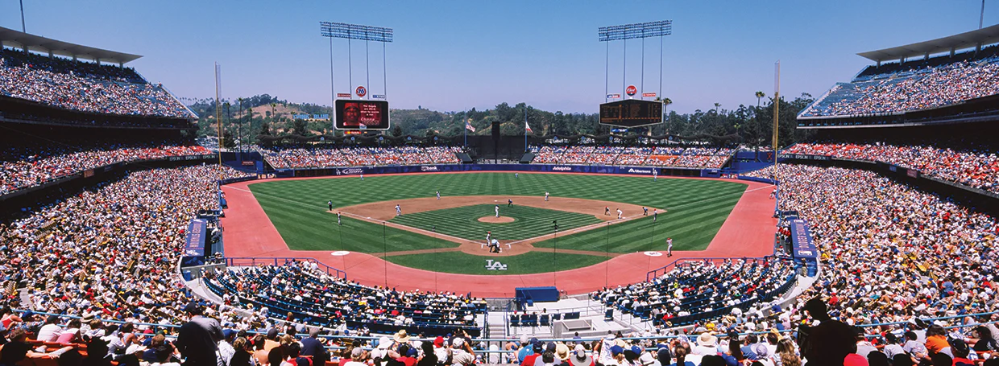
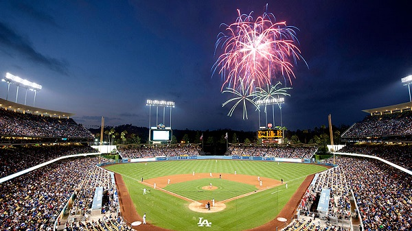

Gone West: The Rangers Are Sold, the Dodgers Are Born, and the Entire League Just Got More Interesting
A franchise exits Texas, a mysterious owner arrives from California, and 189 players wait to be claimed. Peter Gammons has the story.

There is something almost liturgical about an ownership change in a dynasty league. The roster stays. The contracts stay. The history stays — the wins and losses and the slow accumulating weight of decisions made by someone who is no longer in the room. What changes is the name above the door and the vision behind the eyes, and sometimes that is enough to change everything.
The Texas Rangers have been sold.
The paperwork cleared on a cold February morning, and just like that, a franchise born into the TSDL's expansion class of 2024 — with high hopes, a reasonable budget, and the optimism that comes with starting something new — was someone else's problem and someone else's dream. The outgoing ownership group, which had steered the Rangers through two increasingly frustrating campaigns, chose not to comment publicly. People close to the situation described a transaction that was less a sale and more a surrender — a quiet acknowledgment, delivered in the form of signed documents, that this particular ownership group had taken the franchise as far as it was going to go.
"The financial picture had become complicated. There were partners who wanted out, and when partners want out, the math rarely works in the remaining owner's favor. The sale was the cleanest option."
Eight wins in 2024. Seven in 2025. A 16th-place consolation bracket finish last October, dropping them second-from-last in a league of 19. The Rangers were not a team in outright collapse; they were a team that had never quite found altitude. The roster had talent — real talent, buried in Year 3 contracts and MiLB slots — but management of it, sources suggest carefully, was not always as focused as a league this competitive demands. The window between competing and drifting is thinner in dynasty baseball than almost anywhere in sports, and the Rangers spent two seasons on the wrong side of it.
The Man From the Pacific

The California-based group that purchased the Rangers is led by a man who identifies himself in league communications only as Jacob. His surname, by now-familiar arrangement, does not appear in this publication — and those who have pressed him on the matter have received, at best, a warm deflection, and, at worst, a look that quietly ends the conversation.
What is known about Jacob is this: he relocated to the West Coast from the East at some point in the recent past, under circumstances that one acquaintance described only as "a career change that came rather suddenly." He is, by all available measures, well-capitalized. He has studied this league with the kind of intensity that usually precedes either a championship or a spectacular public unraveling. He is ambitious without being reckless, patient without being passive — or so his early communications suggest, though one is always more impressive in theory than in practice.
"I've been wanting to do something like this my whole life. I'm not here to maintain anything. I'm here to build."
He has chosen to rename the franchise the Los Angeles Dodgers, a choice that carries its own considerable freight. Dodger Stadium. Sandy Koufax and Don Drysdale. Kirk Gibson and the one-legged home run. Fernando Valenzuela and the summer of Fernandomania. Whether Jacob is invoking that tradition or simply reaching for its glamour remains an open question. But the name hangs in the air now, in a league that once had a Texas Ranger, and now has something else entirely.
One veteran league source — someone who has watched ownership transitions in this league before — offered this assessment: "Every new owner says they're building something different. Most of them mean it. What separates the ones who actually do it is whether they're willing to make the uncomfortable picks on Expansion Draft day. The obvious choices are obvious for a reason. The good ones see past them."
How It WorksThe Rules of Engagement
Under Article IV of the TSDL Constitution — specifically the provisions covering replacement ownership — Jacob has elected to trigger an Expansion Draft. The structure is straightforward in principle and complicated in execution.
Jacob may keep up to four players from the Rangers' existing roster at their current salaries. The most important word in that sentence is not four — it is reset. Every player he chooses to keep will have their contract year reset to Year 1, regardless of where they currently sit on the salary progression scale. A pitcher in Year 3 earning $20 becomes a Year 1 pitcher earning $20 — the salary does not change, but the clock starts over, buying the franchise years of controlled cost before the $5-per-year escalation begins to bite.
The seventeen holdover franchises each protected twenty players from their combined major and minor league rosters as of October 1st. Everything left unprotected went into the pool. Jacob may select from it freely, constrained only by the salary cap: his total roster salary cannot exceed $260, minus $1 for each unfilled active roster spot. There is no Redistribution of Wealth Draft, because only one new owner is involved. The pool belongs entirely to Jacob.
One hundred and eighty-nine players. Both the quantity and the quality of what's available are, to put it plainly, extraordinary.
The InheritanceWhat Texas Left Behind
The Rangers left Jacob something more interesting than their win-loss record suggests. The roster has dead weight, certainly — veterans at salaries that reflect past optimism rather than present value — but buried inside it are pieces that, in a better-managed context, could anchor a contending franchise for years.
| Player | Pos | Salary | Curr. Year | Resets To | MLB Org |
|---|---|---|---|---|---|
| Cristopher Sanchez | SP | $20 | Year 3 | Year 1 | PHI |
| Kristian Campbell | 2B | $2 | Year 2 | Year 1 | BOS |
| Bryce Rainer | SP (MiLB) | $0 | Rookie | Year 1 | DET |
| Hunter Goodman | C | $2 | Year 2 | Year 1 | COL |
| Freddie Freeman | 1B | $42 | Year 2 | Year 1 | LAD |
| Cade Smith | RP | $5 | Year 3 | Year 1 | CLE |
| Harry Ford | C (MiLB) | $0 | Rookie | Year 1 | WSH |
| Willson Contreras | C | $13 | Year 3 | Year 1 | BOS |
There is a phrase scouts use when they watch a young pitcher and something just clicks — some combination of arm angle and movement and compete — and they say: this one is different. Cristopher Sanchez, the Phillies' left-handed starter, inspires exactly that kind of assessment from people who watch pitching for a living. He induces weak contact at elite rates. He commands both sides of the plate. He is 27 years old in one of baseball's best rotations, getting better, and will be 28 by Opening Day. At $20 with his contract year resetting to Year 1, he is the easy centerpiece of any expansion keeper decision Jacob makes.
Kristian Campbell at $2 is, by itself, almost too good to be true. The Red Sox second baseman projects as a multi-year All-Star candidate; the fact that he carries a $2 salary into a Year 1 reset is the kind of value that, a decade from now, dynasty historians will point to as a franchise-defining pick. Bryce Rainer, the Detroit pitching prospect, occupies a minor league roster spot at zero cost and projects as a legitimate front-of-rotation arm two or three years from now. And Hunter Goodman — the Rockies' catching prospect with raw power that registers on radar guns that measure exit velocity — at $2 rounds out a four-keeper package that costs Jacob $24 in combined salary and gives him four genuine building blocks.
What the Other 17 Teams Left Behind

One hundred and eighty-nine players. Both the breadth of that number and the names within it require a moment of quiet contemplation before the analysis begins. Peter Gammons has been covering this league since its founding, and he has never seen a pool quite like this one — not in depth, not in dollar value, not in the sheer volume of players who, on any other team, would be considered untouchable.
Begin with the most astonishing single fact in the entire exercise: the Las Vegas Aces exposed Juan Soto.
Soto. $95. Year 4, resetting to Year 1 upon selection. The New York Mets outfielder, who has been one of the three or four best offensive players in baseball for half a decade, was left unprotected by the reigning 2024 TSDL champions — a franchise so loaded with talent that a $95-salary superstar did not crack their top twenty protected players. That sentence is worth reading twice. The Las Vegas roster, which also chose not to protect Yordan Alvarez ($66), Bryan Reynolds ($31), Jacob deGrom ($31), Carlos Rodon ($21), and Raisel Iglesias ($24), is either a monument to roster construction or the most expensive roster management mistake in league history. The available evidence suggests the former.
"When Las Vegas has to let go of Juan Soto — Juan Soto — you don't feel sorry for Jacob. You feel sorry for everyone else in this league who doesn't get to pick first."
The Atlanta Braves exposed Zack Wheeler at $48 — a Year 5 pitcher whose salary was climbing toward unaffordable, a legitimate ace who at 35 has begun his long negotiation with the calendar. The Toronto Blue Jays exposed Nathaniel Lowe ($14), Matt Chapman ($19), Josh Lowe ($31), and Nick Castellanos ($24) — an entire infield's worth of veterans, a clear signal of a franchise that has made its bet on youth and is prepared to live with it. Colorado exposed Aaron Nola ($36) — a future Hall of Famer now in the final chapters of his usefulness as a dynasty asset.
And then there is the minor league layer, which may ultimately be where Jacob does his most important work. Ricky Tiedemann, the Toronto pitching phenom — exposed by Colorado. Tink Hence, the Cardinals' electric right-hander, exposed by New York. Chase Petty, a legitimate power arm from the Reds system, exposed by Toronto. Zac Veen, one of the better outfield prospects in the game, exposed by Houston. Any one of these players, selected at $0 into a minor league roster spot, could be the most valuable pick Jacob makes in this entire draft. All four would constitute a minor league system built overnight from scratch.
"The MiLB layer of that pool," said one league analyst, "is better than some teams' actual minor league systems. Jacob walked into a situation that takes most expansion franchises three years to build."
The DecisionThree Paths Through the Pool
Given the depth of what's available and the flexibility of a $24 keeper salary, Jacob faces something rare in dynasty baseball: genuine optionality. He can go big, go deep, or go long. None of the three is wrong. All three carry real risk.
Keep the four from Texas ($24 total). Enter the pool and take Juan Soto at $95 as the franchise cornerstone. Yes, $95 is a real salary constraint — but with the Year 1 reset, Jacob controls the best player available in this pool for the foreseeable future before the escalation ladder kicks in. The remaining roster spots get filled at the Free Agent Auction, where Jacob still has over $140 of working budget after accounting for empty-spot minimums. You build around Soto at every position. Some teams are built around transcendent talent. Soto is that.
Skip the blockbuster. Keep the four. Then hunt the Year 4 and Year 5 players whose contracts reset to Year 1 upon selection — the conversion arbitrage play. Triston Casas at $15/Year 1. Tanner Scott at $21/Year 1. Matt Chapman at $19/Year 1. Each of these players buys back years of controllable cost at a price that was set when someone else was paying. Layer in four or five MiLB names from the deep prospect pool. Arrive at the auction with $100 or more and spend into depth. You build a balanced roster with a controlled cost structure that doesn't blow up in three years.
The dynasty purist's play. Keep all four from Texas. Take a modest selection of proven major leaguers from the pool — enough to be immediately competitive, not enough to strain the budget. Then select every elite MiLB prospect available at zero cost: Hence, Tiedemann, Petty, Veen, Honeycutt, and as many more as the ten minor league spots can hold. Enter the Free Agent Auction with $200 or more — among the highest budgets in the league — and spend aggressively into positions of need. Year one may be rough. Year three, you're in the playoff conversation. Year five, this roster looks like Las Vegas does today: so good you're exposing Soto.
The Long View
A New Chapter at the Edge of the Pacific
/LADlogo26solid.jpg)
Peter Gammons has been writing about baseball, in one form or another, for longer than most of this league's owners have been alive. He has covered trades that changed franchises and trades that merely changed rosters. He has watched ownership groups arrive with money and ambition and leave with neither. He has learned to be skeptical of clean slates, because clean slates are only clean until the first decision, and the first decision is usually the most revealing.
The Texas Rangers are gone. The Los Angeles Dodgers are here. Jacob [REDACTED] — whose name, as he has made clear, is a matter of personal discretion rather than public record, and whose willingness to relocate suddenly and completely should perhaps be seen as a feature rather than a mystery — has inherited one of the most favorable expansion situations this league has ever produced. The pool is historic. The keeper options are legitimate. The budget is flexible. The competition, formidable as it is, has gifted Jacob something most expansion owners wait years for: a chance to be good, immediately, if he simply makes the right choices on draft day.
None of this guarantees anything. Expansion franchises fail at roughly the same rate as expansion franchises succeed. Optionality is not a strategy; it is a prerequisite for one. Jacob will have to make actual decisions, some of which will be wrong, and he will have to live with them in the way that all dynasty owners live with their mistakes — publicly, at length, in the standings.
But if you are sitting in Chavez Ravine today, looking out at a league full of teams that have been building for years, and you are Jacob [REDACTED], who moved west under circumstances he prefers not to discuss, and you have 189 players to choose from and four cornerstones already in hand — you have to feel, at minimum, like the first chapter of this story is going to be very good reading.
The Dodgers are born. The work begins.